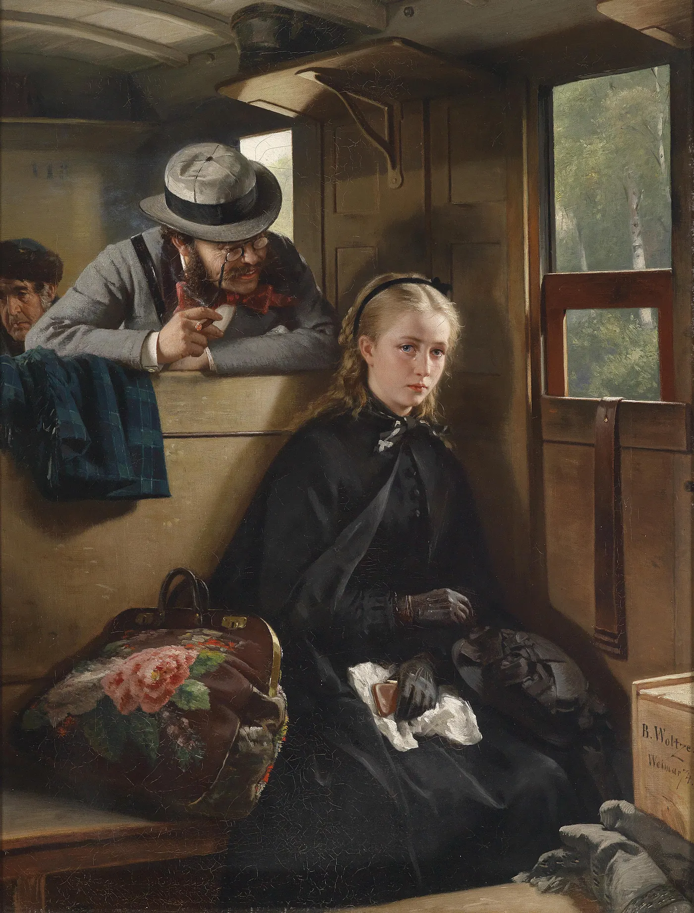
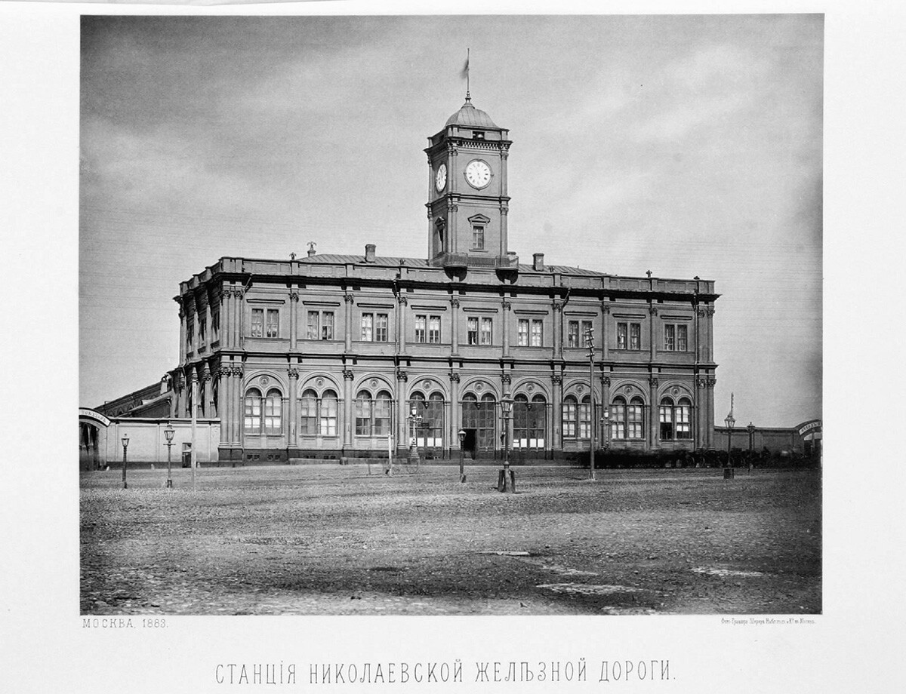

Traveling by Train

In Leo Tolstoy’s Anna Karenina, traveling by train is a recurring motif, which can be defined as the act of departing, arriving, and being transported by railway. Rather than functioning as a static image, it is a dynamic process that shapes characters’ psychological journeys. Tolstoy uses train travel to remove characters from familiar environments and place them into transitional spaces. Travel by train establishes a symbolic tension between individual will and external inevitability, representing fate, liminality, modernity, and moral instability.
In 19th-century Russia, the construction of railroads produced strong expectations for democracy, harmony, progress, and social unity. However, it also introduced a world governed by mechanical force rather than human intention. Many travelers were afraid of the train itself because they were confined in a piece of fast-moving machinery. This common anxiety of having no influence over the motion of the train turned the compartment into a locus of trauma. This was worsened by optical and acoustic isolation from the rest of the train and the outside world. Passengers were scared of catastrophic accidents, crime within isolated compartments, loss of sexual control, and medical vulnerability. Overall, while railroads inspired utopian expectations, the compartmentalized European railcar design often produced division, discomfort, and anxiety instead (Schivelbusch 70–88). Many European authors, including Charles Dickens, expressed deep anxiety about the railway. While Dickens acknowledged the industrial progress, he depicted it as a source of psychological terror, death, and social dislocation. In “The Signalman,” the railway becomes an eerie and almost supernatural force, reflecting broader Victorian fears surrounding railway mania, industrial acceleration, technological instability, and catastrophic train accidents that accompanied the rapid expansion of rail travel across Europe. Dickens’ portrayal of isolated railway spaces, traumatized workers, and fatal collisions reveals nineteenth-century anxieties that modern transportation was transforming human life faster than society could psychologically or morally comprehend (Çelik 124-132). Train travel is represented across Tolstoy’s Anna Karenina, Dostoevsky’s The Idiot, and Nekrasov’s poem The Railroad, through a shared concern with the railway as a charged modern space, but each text assigns it a different symbolic meaning. In all three, the railway is tied to the disruptions of modernity and industrial expansion, functioning as a space where human lives are brought into contact with larger social and historical forces (Mosova et al.). In Nekrasov’s The Railroad, this is expressed most explicitly through the depiction of the railway as a site of suffering and exploitation, where human progress is built on the unseen labor and sacrifice of workers, emphasizing the social cost of industrial “progress.” Tolstoy’s Anna Karenina develops this darker register further by presenting the train as an impersonal, almost fateful force that mirrors social fragmentation and contributes to individual catastrophe, culminating in its association with death and inevitability (Mosova et al.). In contrast, Dostoevsky’s The Idiot uses the train less as an instrument of destruction and more as a narrative and symbolic meeting point, bringing strangers into close, forced proximity that enables sudden intimacy and confessional dialogue. Taken together, Nekrasov emphasizes material violence, Tolstoy psychological and existential destructiveness, and Dostoevsky intensified human encounter within modern mobility (Mosova et al.). The motif initially emerges in Anna Karenina at the Moscow train station where Anna Karenina meets her brother, Stiva Oblonsky, traveling from St. Petersburg. This is the first time Anna and Count Alexei Vronsky meet. In this scene, a railway worker is killed by a train, highlighting the dangers of modernity and immediately linking trains to disruption and death. Anna herself views this event as a bad omen (Tolstoy 63-68). This moment foreshadows the motif’s potential for destruction and shows that trains are not neutral vehicles but objects of violent, uncontrollable motion. In Anna’s final act, repeated associations with the train reach a tragic conclusion in her suicide (Tolstoy 767–771). Her death is not an isolated event but the final expression of a pattern established from the beginning. The culmination of this motif occurs when Vronsky travels by train to Serbia to fight in the Russo-Turkish War (Tolstoy 779-785). His participation in the war is an attempt to die nobly rather than living with his pain following Anna’s suicide. It is the train that brings Vronsky and many other men to the war, where they will likely be killed. This cements the railway as a road to death. Traveling by train ties into Anna’s psychological state throughout the novel. Each time she boards or rides a train, she experiences moments of emotional crisis or transition. After meeting Vronsky and returning to St. Petersburg, the train mirrors her inner turmoil, and her thoughts parallel its motion. The train’s rhythmic, but unending movement reflects her own inability to control her emotions or life choices. During her journey, accompanied by a cinematic description of a snowstorm, her feelings for Vronsky intensify with the same velocity as the train itself. The train becomes a liminal space where Anna’s usual rules, identities, and hierarchies of the "normal" world are temporarily suspended. The act of being uncontrollably pushed forward or transported by train represents Anna being carried forward by her own passion. From a social and cultural perspective, the train represents the modernization of traditional Russian life. The railway station serves as a place of encounter between old and new acquaintances. It removes travelers from their previous settings, placing them into a shared, anonymous space, reduces distance, connects people from diverse social circles, and undermines established hierarchies. For example, Anna and Vronsky meet at the railway station twice (Tolstoy 64, 104-106), Anna first meets Countess Vronskaya on her journey from St. Petersburg to Moscow (Tolstoy 60-65), Karenin reunites with Anna after her trip to Moscow and meets Vronsky (Tolstoy 106-109), and a diverse group including Sergey Ivanovich, Vronsky, Countess Vronskaya, Mikhail Semyonych Katavasov, and Stiva Oblonsky are reacquainted when they happen to be on the same train. For Anna, the train enables her movement between disparate social worlds as a wife, a lover, and a social outcast; however, it also intensifies her alienation. Each train journey distances her further from social acceptance. Tolstoy, skeptical of modernization and the railway, characterizes travel by train as such. Levin, his autobiographical character, explicitly dislikes railways and only uses the train once to go from Moscow to his estate. He was "overwhelmed by a confusion of concepts, dissatisfaction with himself, and shame about something” (Tolstoy 94) when talking about politics and the new railways with the other passengers on his journey. This reflects a broader transformation in nineteenth-century society, where technological progress disrupts prior understandings of identity and belonging. In contrast to Levin, Oblonsky attempts to secure a job with a railroad company (Tolstoy 722). Tolstoy characterizes Oblonsky’s motives as shallow, superficial, and money-driven. He repeats the word “honest” satirically and gives Oblonsky’s position an intentionally wordy and nonsensical title, “Member of the Commission of the United Agency of the Mutual Credit Balance of the Southern Railways and Banking Offices” (Tolstoy 722). Tolstoy portrays the construction of railways as a matter associated with corruption and moral ambiguity. In Anna Karenina, the motif of traveling by train is uniquely integrated into the fabric of the narrative. It is more than just a symbol of modern life; it is a recurring theme that simultaneously shapes both character and plot. The train travel motif structurally punctuates the novel at key inflection points. Major narrative shifts coincide with departures or arrivals, reinforcing the sense that the storyline is driven by the same mechanical inevitability as the train itself. The train, once a means of travel, becomes a mechanism of irreversible destruction. Each instance of boarding, departing, or riding reinforces the novel’s expression of inevitability and fragmentation. Through this dynamic motif, Tolstoy transforms the railway into a powerful narrative force that carries his characters toward their ultimate destinies while revealing the psychological and social costs of modernity.
Works Cited
- Çelik, Seda Coşar. "Railways, Ghosts and Charles Dickens' 'The Signalman.'" Journal of Narrative and Language Studies, vol. 6, no. 10, June 2018, pp. 124-132, nalans.com/index.php/nalans/article/view/93.
- Mosova, Diana V., et al. "Train as a Semantic Space in Russian Culture of the 19th-20th Centuries." Rupkatha Journal on Interdisciplinary Studies in Humanities, vol. 13, no. 1, 28 Mar. 2021, https://doi.org/10.21659/rupkatha.v13n1.14.
- Schivelbusch, Wolfgang. "The Compartment." The Railway Journey: The Industrialization of Time and Space in the Nineteenth Century, 1st ed., University of California Press, 2014, pp. 70–88. JSTOR, http://www.jstor.org/stable/10.1525/j.ctt6wqbk7.11.